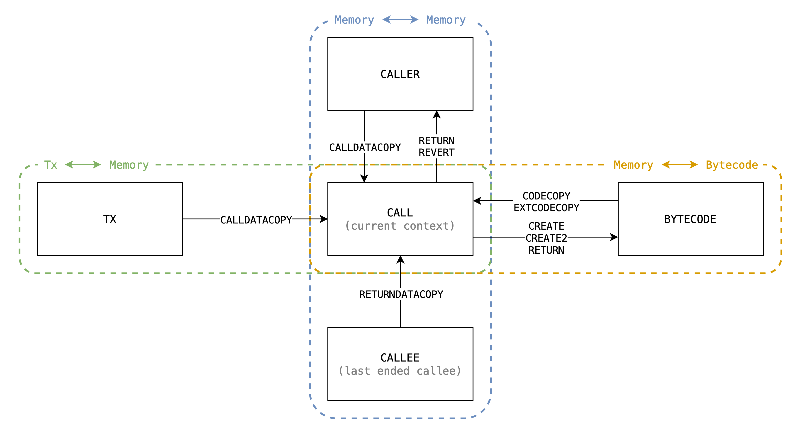

Multi-Step Implementation
Introduction
In EVM, there are serveral opcodes moving dynamic-length bytes around between different sources, here is a complete list:
| Type | Opcode | Source | Destination |
|---|---|---|---|
| 1 | CODECOPYEXTCODECOPY |
bytecode[code_hash] |
calls[call_id].memory |
CALLDATACOPY and is_root |
txs[tx_id].calldata |
calls[call_id].memory |
|
CALLDATACOPY and not_root |
calls[caller_call_id].memory |
calls[call_id].memory |
|
| 2 | RETURNDATACOPY |
calls[callee_call_id].memory |
calls[call_id].memory |
| 3 | RETURN and is_createCREATECREATE2 |
calls[call_id].memory |
bytecode[code_hash] |
SHA3 |
calls[call_id].memory |
TBD | |
| 4 | RETURN and not_create |
calls[call_id].memory |
calls[caller_call_id].memory |
REVERT and not_create |
calls[call_id].memory |
calls[caller_call_id].memory |
With illustration:

There could be classified to be 4 types:
* -> memory (padding)- Including:
CALLDATACOPYCODECOPYEXTCODECOPY
- Copy from calldata or code to current memory.
- Memory gets filled with 0's when copied out of source's range, in other words, source is padded with 0's to the range.
- Including:
* -> memory (no padding)- Including
RETURNDATACOPY. - Similar to Type 1, but the range is explicitly checked to be in source's range, otherwise the EVM halts with exception. So no padding issue.
- Including
memory -> * (no range capped)- Including:
RETURNwhenis_createCREATECREATE2SHA3
- Copy from current memory to destination.
- No padding issue since memory is always expanded implicitly due to lazy initialization.
- Including:
memory -> * (range capped)- Including:
RETURNwhennot_createREVERTwhennot_create
- Similar to Type 3, but the range is capped by caller's assignment.
- Including:
Approaches
Approach #1 - Given access to previous step
Take CALLDATALOAD as an example, in the approach by @icemelon, it requires access to previous step to infer what's the state of current step, to know if the step is the first step, we check
curr.opcode == CALLDATALOADprev.execution_state != CALLDATALOAD or prev.finished is True
And it transit the StepState at the last step, which is inferred from if the bytes left to copy is less then a step's amount.
Approach #2 - Introduce internal ExecutionState
This approach introduce internal ExecutionState with extra constraint of ExecutionState transition, and the inputs will be passed by constraint from previous step. The new ExecutionState are:
-
CopyMemoryToMemory- Can only transited from:
RETURNREVERTCALLDATACOPYRETURNDATACOPY
- Inputs:
src_call_id- id of source call (to be read)dst_call_id- id of destination call (to be written)src_end- end of source, it returns0when indexing out of this.src_offset- memory offset of source calldst_offset- memory offset of destination callbytes_left- how many bytes left to copy
- Note:
- The
src_endis only used byCALLDATACOPYsince only it needs padding.
- The
- Can only transited from:
-
CopyTxCalldataToMemory- Can only transited from
CALLDATACOPY - Inputs:
tx_id- id of current txsrc_end- end of source, it returns0when indexing out of thissrc_offset- calldata offset of txdst_offset- memory offset of current callbytes_left- how many bytes left to copy
- Can only transited from
-
CopyBytecodeToMemory- Can only transited from:
CODECOPYEXTCODECOPY
- Inputs:
code_hash- hash of bytecodesrc_end- end of source, it returns0when indexing out of thissrc_offset- calldata offset of txdst_offset- memory offset of current callbytes_left- how many bytes left to copy
- Can only transited from:
-
CopyMemoryToBytecode- Can only transited from:
CREATE- copy init codeCREATE2- copy init codeRETURN- copy deployment code
- Inputs:
code_hash- hash of bytecodesrc_offset- calldata offset of txdst_offset- memory offset of current callbytes_left- how many bytes left to copy
- Note
- This differs from
CopyBytecodeToMemoryin that it doesn't have padding.
- This differs from
- Can only transited from:
If we can have a better way to further generalize these inner
ExecutionState, we can have less redundant implementation.han
And they do the bytes copy with range check specified by trigger ExecutionState.
Also these internal ExecutionStates always propagate StepStates as the same value, since the transition is already done by the trigger of ExecutionState.
Take CALL then CALLDATALOAD as an example:
- Caller executes
CALLwith stack values (naming referenced frominstruction.go#L668):inOffset = 32inSize = 32
- Callee executes
CALLDATALOADwith stack values (naming referenced frominstruction.go#L301-L303):memOffset = 0dataOffset = 64length = 32
- The first step of
CopyMemoryToMemorywill receive inputs:src_call_id = caller_call_iddst_call_id = callee_call_idsrc_end = inOffset + inSize = 64src_offset = inOffset + dataOffset = 96dst_offset = memOffset = 0bytes_left = length = 32
Then, in every step we check if src_offset < src_end, if not, we need to disable the source lookup and fill zeros into destination. Then add the *_offset by the amount of bytes we process at a step, and subtract bytes_left also by it, then propagate them to next step.
Conclusion
Comparison between the 2 approaches:
- Approach #1
- Pros
- No additional
ExecutionState
- No additional
- Cons
- Each multi-step opcodes will have at least 3 extra nested branches:
is_first- If the step is the firstnot_first- If the step is n-th stepis_final- If the step is final
- Each multi-step opcodes will have at least 3 extra nested branches:
- Pros
- Approach #2
- Pros
- Each multi-step opcodes only need to prepare the inputs of those inner
ExecutionStateand do the correctStepStatetransition. - Only 2 nested branches:
not_final- If the step is n-th stepis_final- If the step is final
- Each multi-step opcodes only need to prepare the inputs of those inner
- Cons
- Additional
ExecutionState
- Additional
- Pros
In the context of current implementation, approach #2 seems easier to implement due to the separation of complexity, and also less prover effort.
In the context of re-designed EVM circuit (re-use instruction instead of building giant custom gates), it seems no difference on prover effort between the 2 approaches, but approach #2 seems better because it extracts the nested branch and should reduce the usage of rows.